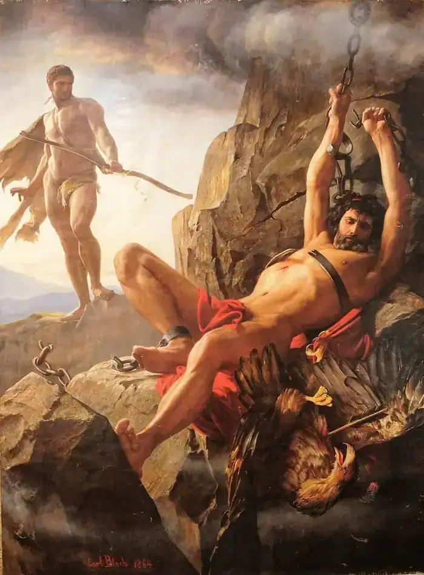
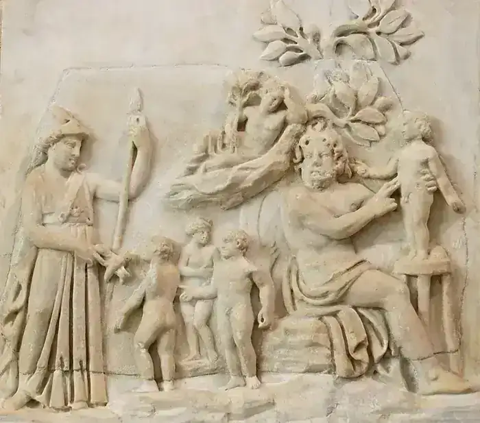
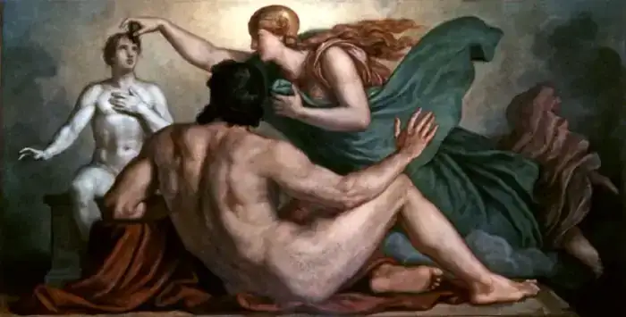

The myth
Prometheus appears in Hesiod and Aeschylus: a Titan who steals fire from the gods, gives it to humans, and is punished by being bound while an eagle eats his liver. In some versions he also teaches crafts and trickery.
Maps, diagrams and images






The claim
The ancient-astronaut reading makes Prometheus a visitor who brought technology. It treats the fire as a device and the punishment as a response by other visitors.
The myth is a theodicy — an explanation of why human life is hard and why knowledge costs — and it is one of the most interpreted stories in Western literature, from Aeschylus to Shelley. None of that interpretation requires a visitor, and none of the ancient sources describes one.
Documented: the myth, its sources and its interpretations.
Documented: its function as a story about knowledge and its cost.
Not established: any historical figure, or any visitor.
The error: reading an etiological myth as a report.
The label: fiction.
Why it is in the archive
Because it is the cleanest example of a myth that is already about exactly the thing the fringe reading claims to have discovered, and says something better.
Open resources on this topic
- PapersOpen-access articles: DOAJ · PubMed Central · Internet Archive Scholar
- BooksPublic-domain and borrowable copies: Open Library · Project Gutenberg · Google Books · Internet Archive
More images
Cite this page
Momin, S. (2026). Prometheus the Rebel. The Larger World Archive. https://drsamonline.github.io/LARGE_GLOBE/prometheus.htmlMomin, Sohil. “Prometheus the Rebel.” The Larger World Archive, 2026, https://drsamonline.github.io/LARGE_GLOBE/prometheus.html.Momin, Sohil. “Prometheus the Rebel.” The Larger World Archive, 2026. https://drsamonline.github.io/LARGE_GLOBE/prometheus.html.@misc{prometheus2026prometheus,
author = {Momin, Sohil},
title = {Prometheus the Rebel},
year = {2026},
howpublished = {The Larger World Archive},
url = {https://drsamonline.github.io/LARGE_GLOBE/prometheus.html},
note = {Last reviewed 20 November 2026}
}Last reviewed 20 November 2026 · Corrections policy · this page is not peer reviewed
Sources for this page
- Wikipedia, “Prometheus” — the myth and its sourcesen.wikipedia.org
- Wikipedia, “Prometheus Bound” — the playen.wikipedia.org
- Wikipedia, “Theogony” — Hesiod's accounten.wikipedia.org
- Wikipedia, “Etiology” — the genreen.wikipedia.org